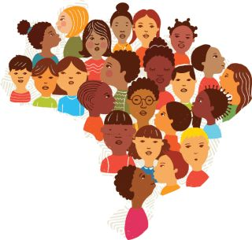

O Brasil é um país de contrastes, ao mesmo tempo rico e pobre, rural e urbano, liberal e conservador. Sua diversidade pode ser observada no clima, na natureza, na geografia, na população, na música, na religião, e em muitos outros aspectos.
 A cultura brasileira recebeu contribuições dos europeus, africanos e asiáticos. Os portugueses chegaram ao Brasil no século dezesseis e prevaleceram sobre os indígenas e também sobre outros europeus, como os franceses e holandeses, que tentavam tomar posse da terra. Assim, podemos dizer que os portugueses colonizaram o Brasil até a Independência, ocorrida no dia 7 de setembro de 1822. Depois disso, a forma de governo foi a Monarquia, até que a República foi proclamada, no dia 15 de novembro de 1889.
Nos séculos dezenove e vinte, outros europeus (principalmente italianos e alemães), e também asiáticos (principalmente japoneses) chegaram ao país como imigrantes, desta forma aumentando ainda mais a diversidade da nossa cultura.
O Brasil é o quinto maior país do mundo em extensão e em população. Com uma população de cerca de duzentos milhões de pessoas em 2013, o país tem vinte e seis estados e um Distrito Federal, onde fica a capital, Brasília. Construída especialmente para ser a capital da nação, Brasília foi inaugurada em 1960, substituindo assim a antiga capital, o Rio de Janeiro. A economia brasileira é uma das cinco mais fortes do mundo ocidental e o país é um dos maiores exportadores de café, soja, açúcar, minér